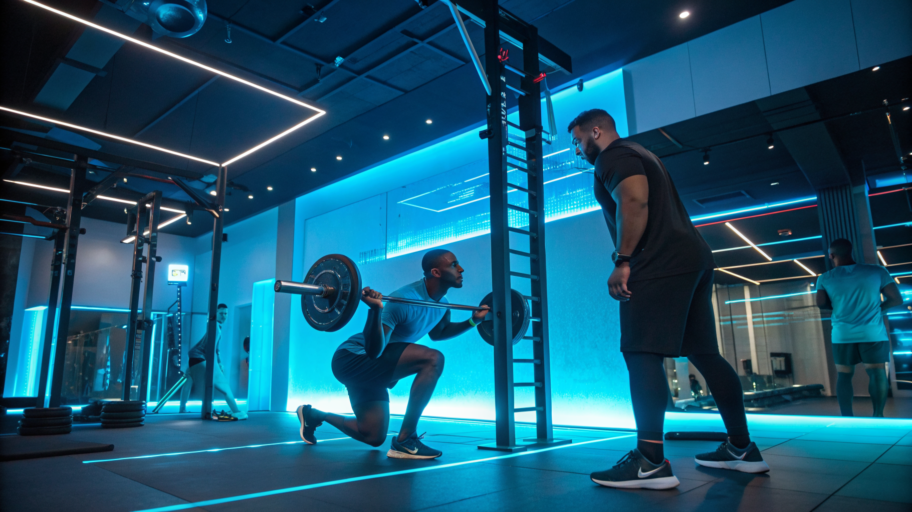

I 3 errori critici nel fitness e come AresAI li elimina per Personal Trainer e Atleti

I 3 errori più gravi commessi da Personal Trainer, Palestre, Fitness Coach e Atleti e come risolverli con AresAI
- Digitare manualmente carichi e serie durante l'allenamento rallenta i professionisti e riduce la concentrazione.
- Tracciare calorie e grammi degli alimenti è un'operazione noiosa e poco precisa, generando errori quotidiani nella dieta.
- AresAI propone una soluzione innovativa con un Voice Coach attivo 24/7 e un sistema di dieta fotografica che semplifica e velocizza la gestione di allenamenti e nutrizione.
Analisi approfondita della notizia e delle implicazioni operative
Negli ultimi anni il settore fitness e coaching sportivo ha visto una crescita esponenziale di software che supportano la gestione degli allenamenti e dei piani alimentari. Tuttavia, molti professionisti continuano a scontrarsi con problemi operativi che diminuiscono la qualità del loro lavoro e soprattutto l’esperienza del cliente.
Un recente studio di settore ha sottolineato come l’incombenza di dover digitare carichi, serie e ripetizioni durante la seduta di allenamento rappresenti uno dei principali ostacoli alla produttività di Personal Trainer e Fitness Coach. Allo stesso modo, il monitoraggio di calorico e macronutrienti tramite inserimento manuale risulta non solo noioso ma anche poco affidabile, compromettendo la qualità del supporto nutrizionale fornito agli atleti.
Questo scenario richiede un cambio di paradigma: non più strumenti complessi e fastidiosi da usare in sala pesi, ma soluzioni integrate e intuitive, che consentano ai professionisti di concentrarsi sul coaching diretto e ai clienti di mantenere alta la motivazione e la precisione nell’allenamento e nella dieta.
Le conseguenze e i costi di non agire
Sottovalutare queste inefficienze operative comporta conseguenze economiche e di tempo rilevanti. Dover interrompere ripetutamente l’esercizio per aggiornare dati manualmente riduce la produttività del coach e la qualità dell’interazione con l’atleta, generando potenziali errori nelle indicazioni tecniche.
La noia e l’imprecisione nella registrazione delle calorie e delle quantità di cibo mangiato incidono negativamente sulla riuscita del piano alimentare, portando a stalli nelle performance e insoddisfazione del cliente. Questo può tradursi in tassi più elevati di abbandono del programma e perdita di reputazione per il professionista e la palestra.
In un mercato sempre più competitivo, affidarsi a metodi tradizionali di gestione rischia di far perdere terreno a beneficio di competitor più all’avanguardia e rapidi nell’adozione di tecnologie digitali. Si tratta di costi indiretti piuttosto che visibili, ma con effetti importanti sul lungo periodo.
Come AresAI risolve il problema
AresAI di RM Studio nasce proprio per superare questi limiti, sfruttando intelligenza artificiale e tecnologie multimodali per offrire un supporto operativo efficace e automatizzato nei contesti di allenamento e nutrizione.
La funzione Voice Coach H24, accessibile tramite QR Code posizionato sul rack in sala pesi, consente ai Personal Trainer e agli atleti di registrare carichi, serie e ripetizioni semplicemente parlando. Questa innovazione elimina la necessità di digitare dati manualmente, permettendo di mantenere la concentrazione sull’esecuzione dell’esercizio.
Parallelamente, la Dieta fotografica multimodale istantanea consente di acquisire tramite una singola foto il piatto consumato, con un’analisi automatica delle calorie e della composizione nutrizionale. Ciò riduce drasticamente gli errori di conteggio e velocizza la registrazione del piano alimentare, assicurando coerenza e precisione.
Questa combinazione permette di snellire l’intero workflow di gestione sportiva: dall’allenamento alla pianificazione alimentare, con un risparmio di tempo e un incremento di qualità e motivazione per clienti e coach.
| Gestione Tradizionale | Con AresAI |
|---|---|
| Digitazione manuale di carichi e serie durante l’allenamento → Interruzioni e distrazioni frequenti | Voice Coach H24 tramite QR Code, registrazioni vocali immediate → Maggiore focus e fluidità |
| Tracciamento calorie e grammature alimentari inserito a mano → Errori e noia nel monitoraggio | Dieta fotografica multimodale istantanea → Analisi automatica e precisa in tempo reale |
| Poco tempo per coaching personalizzato e approfondito → Minore soddisfazione e risultati inferiori | Workflow ottimizzato che libera tempo per coaching di qualità → Fidelizzazione clienti e risultati migliori |
💡 Ti è stato utile questo approfondimento?
Condividilo con un collega o un amico del settore Personal Trainer, Palestre, Fitness Coach e Atleti a cui potrebbe interessare!
FAQ - Domande frequenti su AresAI e gestione fitness avanzata
1. Come posso integrare AresAI nell’ambiente della mia palestra senza interruzioni?
AresAI si integra facilmente grazie al semplice posizionamento del QR Code nelle aree di allenamento, garantendo un avvio rapido senza necessità di installazioni complesse o training intensivi.
2. La funzione dieta fotografica riconosce anche piatti complessi?
Sì, il sistema multimodale combina visione artificiale e database nutrizionali approfonditi per analizzare anche combinazioni e piatti elaborati con alta precisione.
3. Quali sono i vantaggi per gli atleti nella versione Atleta PRO?
Gli atleti hanno a disposizione un assistente vocale personalizzato 24/7 e un tracking della dieta facilitato che migliorano l’autonomia, la precisione e la motivazione durante il percorso di allenamento.
Inizia Subito
Atleta PRO a €19/mese o Coach Hub per Personal Trainer a €99/mese.
Fonti Ufficiali e Risorse Esterne
Scopri l'Intelligenza Artificiale per la tua attività
Ottimizza i processi e aumenta le vendite con le soluzioni B2B di RM Studio.
Scopri AresAI